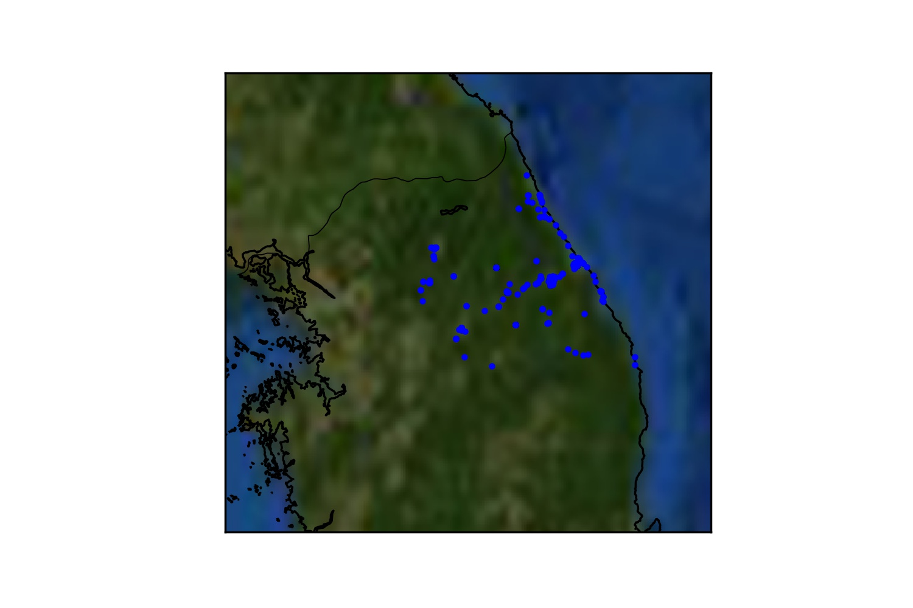

Accountability: About the Olympic Twitter Sample
This data was collected by using the Twitter Streaming and REST API and collecting through a 'geo-fence' query. The data includes all data that Twitter geo-locates within 50 miles of the Olympic Stadium in PyeongChang.
Where did the data come from?
This data was collected by using the Twitter Streaming and REST API and collecting 'tweets' through a 'geo-fence' query.
The REST API version of the query collected all tweets that Twitter geo-located within 50 miles of the Olympic Stadium in PyeongChang.
Simltaneous to this we ran a bounding box filter on the Twitter Streaming API so that we could compare the two collection techniques.
We then combined the data and removed duplicates. The data was collected from 6 February through 12 February, and included the opening ceremony.
Below is a map of the data that illustrates how the data was collected. You can start to see the radius that was used to collect the data.

Who has access to the data?
Our team is the only team that has access to the particular query that we executed on the Twitter API. I am the only analyst
that has conducted cleaning and analysis of the data.
Theoretically, any team could conduct a similar query to get the same data and repeat our process (though the Streaming API is only live data, and could not be performed retractively.)